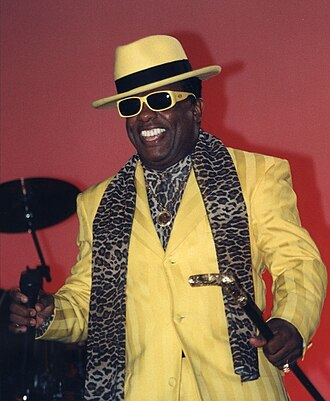

Ronald Isley
Ronald Isley is an American singer, songwriter, and record producer. Isley is the lead singer, a founding member, and last surviving original member of the family music group The Isley Brothers.
Complete Discography & Tracklists (7)
2003 Here I Am - Isley Meets Bacharach 🎵 13 Tracks
2007 The Isley Brothers Featuring Ronald Isley: I'll Be Home For Christmas 🎵 10 Tracks
2010 Mr. I 🎵 0 Tracks
No tracks registered.
2022 Make Me Say It Again, Girl 🎵 0 Tracks
No tracks registered.